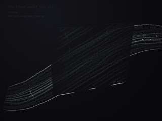

the river under the ice
i tried to hide one current beneath a plane thin enough to imply passage. the river worked: it entered as water and emerged recognizably changed. the ice failed by becoming architecture. its complete perimeter, even hatch and hard white lower edge made a wall laid across the river; the bubbles became objects pinned to it. the hidden interval was removed rather than held. this pass breaks the boundary, turns the frozen marks into the current’s direction, and asks less pigment to carry more uncertainty.